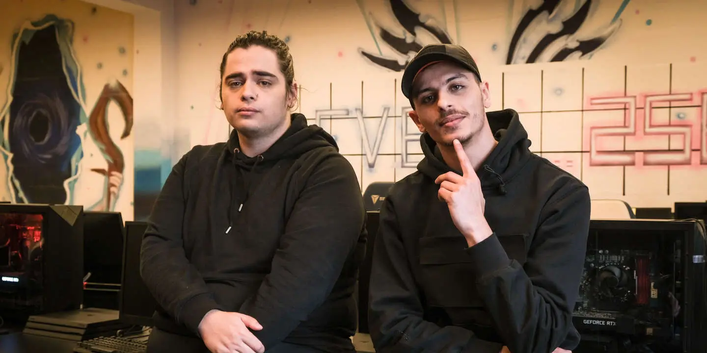

KarmineCorp
La Karmine Corp (surnommée KCorp) est une structure française centrée autour d'une équipe e-sport immatriculée à Tours et basée à Paris. Elle est formée le 30 mars 2020 sous le nom de Kameto Corp par le duo de streamers francophones Kameto et Kotei. Le 16 novembre 2020, l'entrepreneur et rappeur français Prime rejoint la direction de la structure, et l'équipe prend sa dénomination actuelle. Une société par actions simplifiée, présidée par Kameto et dirigée par Prime, est créée quelques mois plus tard.
Kamel “Kameto” Kebir, né le 27 juin 1995 à Corbeil-Essonnes, est un entrepreneur et vidéaste français spécialisé dans le jeu vidéo et l'e-sport. Populaire sur la plateforme Twitch, il est le PDG de la Karmine Corp. Amine “Prime” Mekri, né le 24 septembre 1992 à Aubervilliers, est un entrepreneur, rappeur, vidéaste et designer français spécialisé dans le jeu vidéo et l'e-sport. Ils se sont associés le 16 novembre 2020 pour créer la Karmine Corp.
